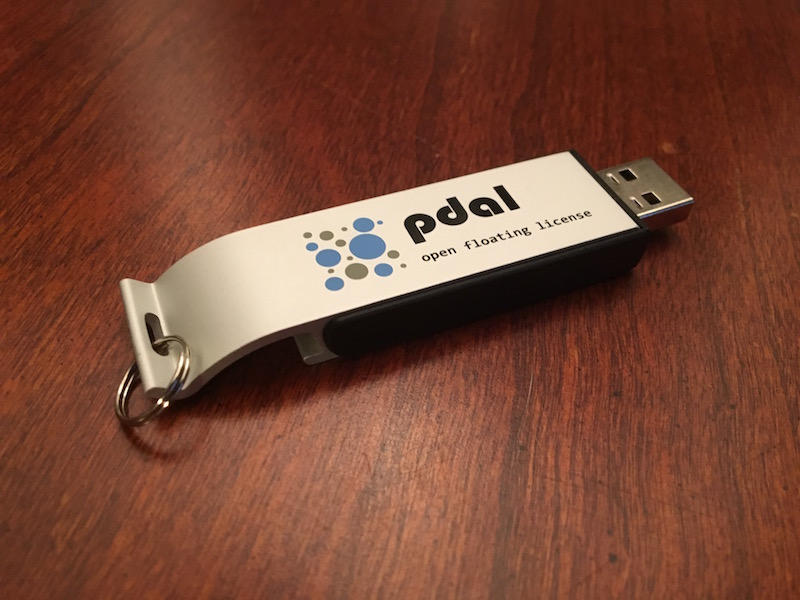

Introduction¶
- Introduction to LiDAR
- Introduction to PDAL
- Software Installation
- Basic Information
- Translation
- Analysis
- Georeferencing
Materials¶
Workshop Materials¶
These materials are available at https://hobu.co/workshops/unavco/ as both a PDF and an HTML website.
USB Example Data Drive¶
A companion USB drive containing workshop example data is required to follow along with these examples.
Note
A drive image is available for download at https://hobu.co/workshops/unavco/image/PDAL.zip